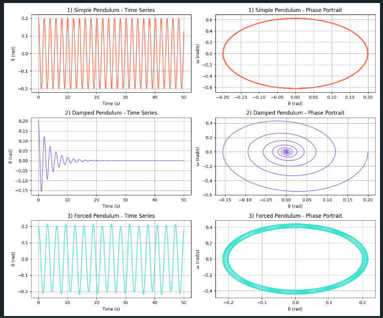

Problem 1..
Investigating the Dynamics of a Forced Damped Pendulum
1. Theoretical Foundation
The forced damped pendulum is a classic example of a nonlinear dynamical system. It demonstrates rich behaviors depending on the amount of damping and external forcing.
Governing Differential Equation
The motion is governed by:
Where:
- \(\theta(t)\): Angular displacement
- \(b\): Damping coefficient
- \(g\): Acceleration due to gravity
- \(L\): Length of the pendulum
- \(A\): Amplitude of the external driving force
- \(\omega\): Angular frequency of the driving force
Full Derivation of the Equation
We begin with Newton’s second law for rotational motion:
For a point mass \(m\) on a pendulum of length \(L\):
The gravitational torque is:
Include damping and external driving torque:
Apply Newton’s law:
Divide both sides by \(mL^2\):
Define effective damping and amplitude:
- \(b' = \frac{b}{mL^2}\)
- \(A' = \frac{A}{mL^2}\)
Then:
Or using standard notation:
Small-Angle Approximation
For small angles (\(\theta \ll 1\)), we use:
The equation becomes linear:
This simplified form is easier to simulate and analyze, especially when damping and external forces are involved.
2. Python Simulation
We simulate 3 cases:
- Simple Pendulum – no damping, no external force
- Damped Pendulum – includes damping, no external force
- Forced Pendulum – no damping, with external driving force
Code Block
import numpy as np
import matplotlib.pyplot as plt
from scipy.integrate import solve_ivp
def forced_damped_pendulum(t, y, b, g, L, A, omega):
theta, omega_ = y
dydt = [omega_, -b * omega_ - (g / L) * np.sin(theta) + A * np.cos(omega * t)]
return dydt
t_span = (0, 50)
t_eval = np.linspace(*t_span, 1000)
y0 = [0.2, 0.0]
configs = [
{"label": "1) Simple Pendulum", "b": 0.0, "A": 0.0, "color": "tomato"},
{"label": "2) Damped Pendulum", "b": 0.5, "A": 0.0, "color": "mediumpurple"},
{"label": "3) Forced Pendulum", "b": 0.0, "A": 1.2, "color": "turquoise"},
]
g = 9.8
L = 1.0
omega_drive = 2.0
fig, axes = plt.subplots(len(configs), 2, figsize=(12, 10))
for i, cfg in enumerate(configs):
sol = solve_ivp(
forced_damped_pendulum,
t_span,
y0,
args=(cfg["b"], g, L, cfg["A"], omega_drive),
t_eval=t_eval
)
theta, omega_ = sol.y
axes[i, 0].plot(sol.t, theta, color=cfg["color"])
axes[i, 0].set_title(f'{cfg["label"]} - Time Series')
axes[i, 0].set_xlabel("Time (s)")
axes[i, 0].set_ylabel("θ (rad)")
axes[i, 0].grid(True)
axes[i, 1].plot(theta, omega_, color=cfg["color"])
axes[i, 1].set_title(f'{cfg["label"]} - Phase Portrait')
axes[i, 1].set_xlabel("θ (rad)")
axes[i, 1].set_ylabel("ω (rad/s)")
axes[i, 1].grid(True)
plt.tight_layout()
plt.show()

3. Results and Interpretation
1) Simple Pendulum
- Time series: Perfect periodic oscillations.
- Phase portrait: A clean ellipse, showing conserved energy.
2) Damped Pendulum
- Time series: Oscillations decrease over time — energy is lost.
- Phase portrait: Spiral pattern toward the origin.
3) Forced Pendulum
- Time series: Oscillations stay active — external force drives the system.
- Phase portrait: Loopy figure showing complex, non-conserved energy behavior.
4. Conclusion
This simulation shows how a pendulum's dynamics depend on damping and driving force. In the next step, we could:
- Add chaotic driving conditions
- Create Poincaré sections or bifurcation diagrams
- Compare energy vs. time plots